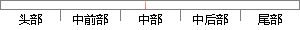

按照窗的个数同时遍历短时帧能量与短时平均过零率，初始状态为静音状态（语音的三种状态，分别为“静音状态”、“过渡状态”、“语音状态”）。
片段位置图

相似结果|
相似片段 1：进行端点检测时，将整段语音信号分为三种状态：静音、过渡和语音。然后对信号进行逐帧分析，信号的开始部分设为静音状态。当信号处于静音状态时，如果信号的短时能量和过零率的低门限有一个被超过，就令帧信号为
相似片段 2：零率同时小于低门限值，由过渡段进入静音状态；条件③：当短时能量和过零率其中之一大于高门限值，由过渡段进入语音段；条件④：当短时能量和过零率同时小于低门限值，但是计时长度小于最短时问门限(被认为是噪音
|
※ 片段修改建议 ※
近似词参考：- 按照：依照 根据
- 平均：均匀
- 状态：状况
- 状态：状况
- 状态：状况
- 状态：状况
- 状态：状况
- 状态：状况
系统自动生成语句： 依照窗的个数同时遍历短时帧能量与短时均匀过零率，初始状况为静音状况（语音的三种状况，分别为“静音状况”、“过渡状况”、“语音状况”）。
注：本片段修改建议为系统自动生成，仅供参考。